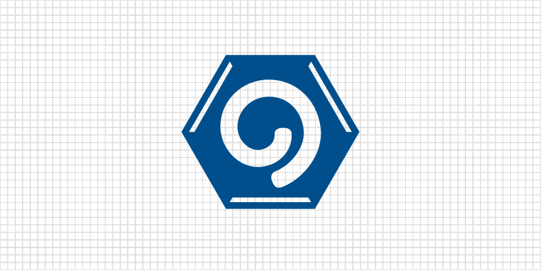
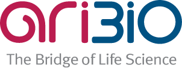

회사 소개
질병의 고통이 없는 행복한 세상을 꿈꾸는기업 아리바이오
CI/BI
아리바이오는 신약개발이 모티브이자 성장동력인 기업입니다. 핵심역량은 연구개발이며 이는 아리바이오와 아리바이오의 모든 제품의 원천이자 국내외 독보적인 기술개발 성과를
보유한 기업으로서의 자부심입니다. 이제 이러한 기업의 자부심을 바탕으로 개발된 새로운 사명과 브랜드는 인류에 공헌하고 행복한 삶을 누릴 수 있도록 노력하는 기업의 정신을
이야기 할 것 입니다.
CI의미
중앙로고
회사명 ARIBIO의 상징으로
의약의 세계를 의미합니다
3개의 테두리
아리바이오가 추구하는 3가지 기업 이념을 의미합니다.
신념과 열정, 혁신과 변화, 배려와 존중
6각형 구조
의약품의 출발물질인 육각의벤젠구조로 기본에 충실하겠
다는 약속을 의미합니다

회사명 의미
회사명 의미, 아리: 깊고 넓음, 아름다움, 지혜를 얻은 사람을 의미
하는 순 우리말, 바이오: 그리스어 '비오스'에서 유래된 생명에 관
한 모든 것, 문구 샆입: 아리바이오는 난치성 질환 치료제를 개발함
으로써 세상에 공헌하고 대한민국을 대표하는 신약개발 회사로 성
장하고자 하는 당사의 포부를 담은 회사명입니다.- 